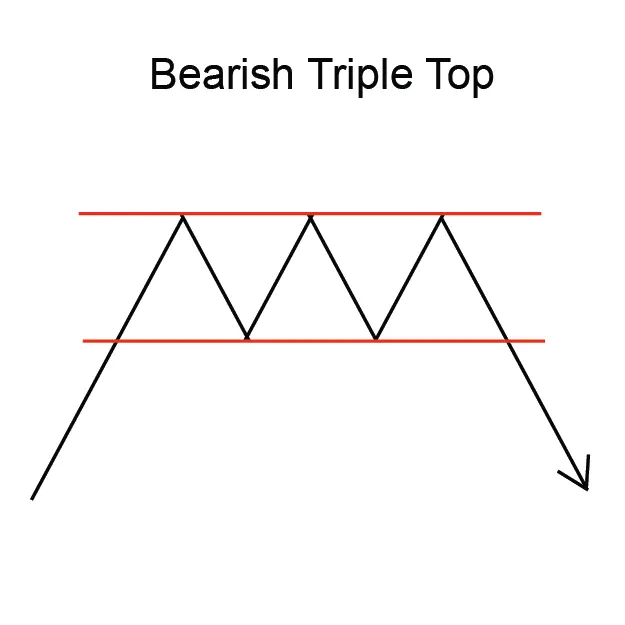
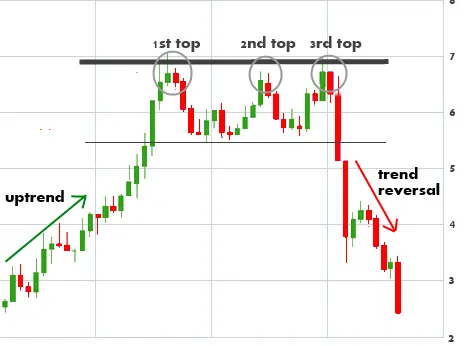

Implicaciones
Un Triple Top se considera una señal de baja, indicando una posible reversión de la tendencia ascendente actual a una nueva tendencia descendente.
Descripción
Un triple top es un patrón de reversión. Marca una tendencia ascendente en el proceso de convertirse en tendencia descendente.
El patrón Triple Top se compone de tres picos agudos, todos en el mismo nivel. Mientras que los tres picos deben ser agudos y distintos, los bajos del patrón pueden aparecer como valles redondos. El patrón es completo cuando los precios caen por debajo del mínimo más bajo de la formación. El punto más bajo también se llama "punto de confirmación".
Los tres picos están bien separados y no forman parte de un patrón de congestión. Los picos no tienen que estar exactamente en el mismo nivel.
Hay una variación híbrida que parece ser un cruce entre un Double y Triple Top. El pico medio es ligeramente más bajo que los picos izquierdo y derecho. Este sigue siendo un patrón de reversión válido.
También es posible que el patrón muestre un cuarto pico antes de que ocurra la reversión.
En general, el volumen en un Triple Top tiende a ser hacia abajo a medida que se forman los patrones. El volumen es más ligero en cada pico de rally. El volumen luego sube a medida que los precios caen por debajo del punto de confirmación y entran en la nueva tendencia descendente. El volumen es mayor en los picos que en los bajos.
Características importantes
Las siguientes son características importantes para un Triple Top.
Duración del patrón
Este patrón puede tardar varios meses en formarse. Además, los expertos están de acuerdo en que cuanto más tiempo tarda el patrón en formarse, mayor será la importancia del movimiento de los precios una vez que se produzca la breakout. Los tres altos no tienen que estar igualmente separados uno del otro.
Necesidad de una tendencia ascendente
El Triple Top es un patrón de reversión que marca el período de transición entre una tendencia ascendente y una tendencia descendente en los precios. Este patrón debe comenzar con una tendencia ascendente de los precios.
Volumen
Es típico ver que el volumen disminuye a medida que avanza el patrón. Sin embargo, esto debería cambiar cuando se produzca una brecha. Una breakout válida debe ir acompañada de una explosión en volumen. Algunos expertos están menos preocupados al ver una tendencia de disminución constante en volumen a medida que el patrón avanza a través de sus tres máximas. Sin embargo, todos coinciden en que un inversionista desea ver un aumento definitivo en el volumen en el momento de la ruptura a través del punto de confirmación.
Reunión después de Breakout
Un alto porcentaje de Triple Tops tienen rallies de vuelta al punto de la ruptura más a menudo que no.
Consideraciones de negociación
Duración
Considere la duración del patrón y su relación con sus horizontes de tiempo de negociación. La duración del patrón se considera como un indicador de la duración de la influencia de este patrón. Cuanto más largo sea el patrón, más tiempo tardará en que el precio se mueva a su meta. Cuanto más corto sea el patrón, más rápido será el movimiento del precio. Si está considerando una oportunidad de comercio a corto plazo, busque un patrón con una duración corta. Si está considerando una oportunidad de comercio a largo plazo, busque un patrón con una duración más larga.
TPrecio objetivo
El precio objetivo proporciona una importante indicación sobre el movimiento potencial de los precios que este patrón indica. Considere si el precio objetivo para este patrón es suficiente para proporcionar rendimientos adecuados después de que sus costos (como comisiones) se hayan tenido en cuenta. Una buena regla es que el precio objetivo debe indicar un retorno potencial de más del 5% antes de que un patrón se considere útil. Sin embargo, debe tener en cuenta el precio actual y el volumen de acciones que tiene la intención de negociar. También, compruebe que el precio objetivo ya no se ha alcanzado.
Tendencia de entrada
La tendencia de entrada es una característica importante del patrón. Una tendencia de entrada superficial puede indicar un período de consolidación antes de que comience el movimiento de los precios indicado por el patrón. Busque una tendencia de entrada que sea más larga que la duración del patrón. Una buena regla es que la tendencia de entrada debe ser al menos dos veces la duración del patrón.
Criterios que respaldan
Apoyo y resistencia
Busque una región de apoyo o resistencia alrededor del precio objetivo. Una región de consolidación de precios o una fuerte línea de apoyo y resistencia en o alrededor del precio objetivo es un indicador fuerte de que el precio se moverá a ese punto.
Ubicación de la media móvil
El Triple Top debe estar por encima de la media móvil. Compara la ubicación del patrón con una media móvil de longitud adecuada. Para patrones de corta duración, utilice una media móvil de 50 días, para patrones más largos utilice un promedio móvil de 200 días.
Tendencia de media móvil
La media móvil debe cambiar de dirección dentro de la duración del patrón y debe dirigirse en la dirección indicada por el patrón. Para patrones de corta duración utilice una media móvil de 50 días, para patrones más largos utilice un promedio móvil de 200 días
Volumen
Un fuerte pico de volumen el día de la confirmación del patrón es un indicador fuerte en apoyo del potencial para este patrón. El pico de volumen debe estar significativamente por encima de la media del volumen durante la duración del patrón. Además, el volumen dentro de la duración del patrón debería estar disminuyendo en promedio.
Otros patrones
Otros patrones de reversión (como las líneas de engulfamiento de Bullish y Bearish y las islas) que ocurren en las cumbres y los valles indican una fuerte resistencia en esos puntos. La presencia de estos patrones dentro de un Triple Top es una fuerte indicación en apoyo de este patrón.
Criterios que refuten
Sin aumento de volumen en la confirmación
La falta de un pico de volumen el día de la confirmación del patrón es una indicación de que este patrón puede no ser fiable. Además, si el volumen ha permanecido constante, o ha aumentado, durante la duración del patrón, entonces este patrón debe considerarse menos fiable.
Ubicación de la media móvil
El Triple Top debe estar por encima de la media móvil. Compara la ubicación del patrón con una media móvil de longitud adecuada. Para patrones de corta duración, utilice una media móvil de 50 días, para patrones más largos utilice un promedio móvil de 200 días. Si el Triple Top está por debajo de la media móvil entonces este patrón debe considerarse menos fiable.
Tendencia de media móvil
Una media móvil que está en tendencia en la dirección opuesta a la indicada por el patrón es una indicación de que este patrón no es fiable. Mira la dirección de la tendencia de la media móvil. Para patrones de corta duración, utilice una media móvil de 50 días, para patrones más largos utilice un promedio móvil de 200 días.
Tendencia de entrada corta
Una tendencia de entrada que es significativamente más corta que la duración del patrón es una indicación de que este patrón debe considerarse menos confiable.
Comportamiento subyacente
Un Triple Top ocurre cuando los precios están en una tendencia ascendente. Los precios suben a un nivel de resistencia, se retiran, vuelven a ese nivel, se retroceden y, finalmente, regresan a este nivel por tercera vez antes de disminuir. En un clásico Triple Top, la disminución después del tercer pico marca el comienzo de una tendencia descendente.
